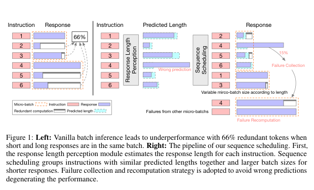
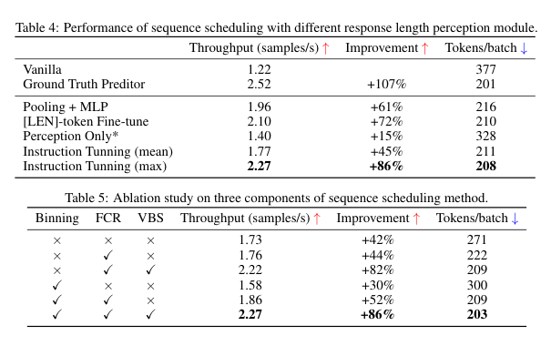

Response Length Perception and Sequence Scheduling（NeurIPS 2023）
Background / Motivation
静态 request-level batch 要等最长输出结束，短序列在后续轮次产生 padding/无效计算。论文在示例负载中观察到 66% token 为冗余计算。输出长度未知，使把相近长度请求放在一起无法直接实施。

Design
- 用 Vicuna-7B 预测回答的最大长度。训练集来自 10,000 个 Alpaca prompt，每个 prompt 采样 4 次，以最大输出长度为监督信号；长度按 50-token 分箱，并用 LoRA 训练 3 epoch。（通过 LoRA 和 instruction tuning 微调的 Vicuna-7B，LoRA小规模训练微调插件? 原始权重加偏置矩阵）
- 对一个 group 内的请求按预测长度排序，把相近长度组成 micro-batch。
- FCR：每个 batch 最多生成至该 batch 的最大预测长度；实际未完成者进入失败集合，最后重算，防止少数严重低估拖住整个 batch。
- VBS：短预测使用更大 batch。实验中长度不小于 300 时 batch=16；更短时按
256×50/L计算并取邻近 2 的幂。
Experienment
实验设置与规模。 Vicuna-7B，单张 A100 80GB；Alpaca 测试子集 10,000 条和 Instruction-in-the-Wild 429 条；group size=256；baseline batch=16；采样温度 0.5。吞吐以 samples/s 计。
结果。 Alpaca 上 baseline 为 1.22 samples/s，指令微调的最大长度预测达到 2.27 samples/s，即 +86%；oracle 长度为 2.52 samples/s。平均每 batch token 从 377 降至约 208。Instruction-in-the-Wild 上从 0.78 提升到 1.24 samples/s。预测最大长度时 FCR 比率 15.3%，预测均值时升至 29.8%，吞吐增益只剩 45%。
限制与启示。 这是离线/grouped static batching，假设能先积累 256 个请求；不等同于在线 continuous batching。在小并发、串行依赖的 Agent DAG 中直接等待大 group 会增加关键路径时延。应把长度预测用于 KV admission、token budget 与关键路径优先级，而不是机械地先攒大组再排序。
Result

Restriction 1. 它不是现代在线 continuous batching 的完整替代方案（vLLM、SGLang）。 2. 等待 256 条形成 group 可能增加低负载延迟。 3. 预测步骤本身要运行模型，虽然作者测得只需生成 1–4 个 token，仍有成本。